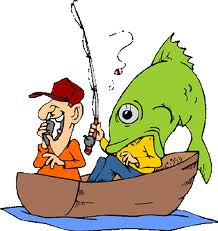
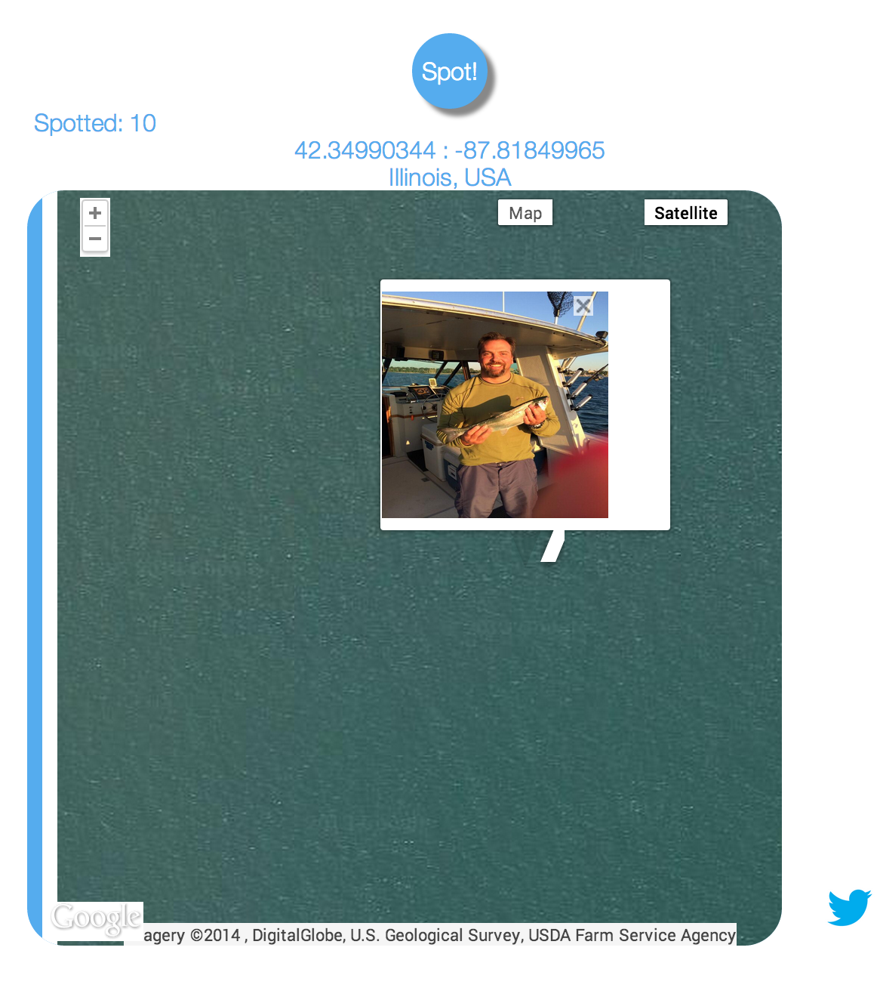
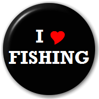

<!DOCTYPE html>
<html>
<head>
  <meta charset="utf-8">
  <title>Scott Mascio</title>
  <link rel="stylesheet" href="css/normalize.css">
  <link rel="stylesheet" href="css/style.css">
  <link rel="stylesheet" href="bootstrap/css/bootstrap-responsive.css">
  <link rel="stylesheet" href="bootstrap/css/bootstrap-responsive.min.css">
  <link rel="stylesheet" href="bootstrap/css/bootstrap.min.css">
  <link rel="stylesheet" href="bootstrap/css/bootstrap.css">

</head>
<body>
 <script type="text/x-handlebars" data-template-name="application">
    <div class='container'>
      <div class='navbar '>
        <div class="container">
           <ul class="nav nav-pills">
            <li><a href="#/resume">Resume</a></li>
            <li><a href="#/spot2fish">Spot2Fish</a></li>
            <li><a href="#/apprentice">My Apprenticeship</a></li>
            <li><a href="#/referencesection">ReferenceSection();</a></li>
            <li><a href="#/personal">Personal</a></li>
          </ul>
        </div>
      </div>
    </div>

    <div class='container'>
      {{outlet}}
    </div>

    <div class='container'>
      <div class='footer'>
        <div class="navbar navbar-default navbar-fixed-bottom">
          <a href="https://twitter.com/_s_mas"></a>
          <a href='https://github.com/scottmascio2115'></a>
          <a href='https://www.linkedin.com/pub/scott-mascio/68/5aa/23'></a>
          <a href="http://www.neo.com/"></a>
          <a href='http://devbootcamp.com/'></a>
          <a href='http://spot2fish.herokuapp.com/'></a>
        </div>
      </div>
    </div>
 </script>

  <script type="text/x-handlebars" data-template-name="spot2fish">
    <span><a href='http://spot2fish.herokuapp.com/'></a></span>
    <span id='spot'> #spot2fish</span>
    <h4>Want to go fishing and dont know where to go or what bait to use?</h4><br>
    <p class='description'>
    Spot2Fish.com looks to solve those problems.<br>
    Using Geolocation the Twitter Api and the Instagram Api, Spot2Fish.com searches in a 60 mile radius of your location and returns Tweets and Instagrams related to fishing.<br>
    Thats cool if you want to find people who like to fish, but a user wants to know where to fish!<br>
    By filtering the results from the Twitter Api and Instagram Api to only return Tweets and Instagrams that contain geocoordinates we know the location people are posting from.<br>
    I use their location in coordination with the Google Maps Api to display their locaiton on a map.<br>
    <span ><a href='http://spot2fish.herokuapp.com/'></a></span><br>
    Currently the Spot2fish is in staging at <a href='http://spot2fish.herokuapp.com/'>http://spot2fish.herokuapp.com/</a><br>
    Spot2Fish is in staging because currently I am refactoring the javascript code to use the module pattern and I am implementing Handlebars.<br>
    <a href='https://twitter.com/spot2fish'>I am also building hype on Twitter : )</a><br><br>
    Feel free to visit and go fishing!!<br><br>
    <h4>Technologies</h4>
    <p class='description'>
    Sinatra<br>
    jQuery<br>
    Javascript<br>
    Instagram Api<br>
    Twitter Api<br>
    Google Maps Api<br>
    Google Maps Places Api<br>
    Handlebars<br>
   </p>
    <h4>Best Features</h4>
    <p class='description'>
    Use geolocation to find user current location.<br>
    Display Tweet or Instagram with details.<br>
    If user declines to use geolocaiton they can search any city.<br>
    Save location of fishing spot.<br>
    Vote on the best spots.<br>
    Find bait and tackle shops near user location.<br>
    Custom Rake task to run every night using Heroku scheduler to build Twitter hype.<br>
    Google Analytics and New Relic to Track site performance.<br>
    <br>
    <br>
    <br>
    <br>
    <br>

    </p>

  </script>

  <script type="text/x-handlebars" data-template-name="apprentice">
    <span><a href="http://www.neo.com/"></a></span>
    <span><a id='patterns' href='http://myapprenticeshippatterns.herokuapp.com/'><span id='neo'>My Apprenticeship Patterns at Neo</span></a></span>
    <p class='description'>
    I kept a blog about my apprecticeship at <a href='http://myapprenticeshippatterns.herokuapp.com/'> Neo</a>, the blog is based on the book Apprenticeship Patterns by Dave Hoover.<br><br>
    The book Apprenticeship Patterns outlines values of a good apprentice and how to mold a successful apprenticeship.<br>
    Each week my goal was to outline 3 patterns from the book that related to my week as an apprentice.<br>
    I very much enjoyed my time as an apprentice. Not only did I increse my skills and contribute to the team, I also developed relationships that I hope to sustain well into the future.<br>
    Please contact <a href='https://www.neo.com/offices/columbus'>Neo</a> for references and reccomendations.<br>
    <br>
    <br>
    <br>
    <br>
    <br>
    </p>


  </script>

  <script type="text/x-handlebars" data-template-name="referencesection">
    <span><a href="https://plugins.jquery.com/referencesection/"></a></span>
    <span><a href='http://referencesection.herokuapp.com/'><span id='neo'>referenceSection();</span></a></span>
    <p class='description'>
    jQuery plugin to add a reference section to page with a description of each of the selected elements. The description is also shown on the hover of element.<br>
    One of my assignments as an apprentice at Neo was to create a jQuery plugin, and register it with jQuery.<br>
    I decided on making a plugin that has the ability to add a reference section to a site or paper.<br>
    I outlined the steps I took to create the plugin <a href='http://myapprenticeshippatterns.herokuapp.com/#/jquery_plugin'> here</a>.<br>
    I really enjoyed this exercise, it was challenging and gave me a chance to dive head first into jQuery and Javascript, two things that Ive grown to love.<br>
    <br>
    <br>
    <br>
    <br>
    <br>
    </p>
  </script>

  <script type="text/x-handlebars" data-template-name="farkle">
    <p> Hello farkle</p>

  </script>

  <script type="text/x-handlebars" data-template-name="adoptacoder">
    <p> Hello adopt</p>

  </script>

  <script type="text/x-handlebars" data-template-name="personal">
    <h4>Email: ScottMascio@gmail.com</h4>
    <h4>Cell: 609-315-1786</h4>
    <h4>Location: Columbus, OH</h4>
    <p class='description'>
    <a href="https://twitter.com/_s_mas"></a>
    <a href='https://github.com/scottmascio2115'></a>
    <a href='https://www.linkedin.com/pub/scott-mascio/68/5aa/23'></a><br><br><br>
    <span class='about'> Married to my Beautiful and Supportive Wife Brooke.</span><br><br><br>
    <span class='about'> 4 Year Basketball Player at the University of Tampa.</span><br><br><br>
    <span class='about'> Finance Degree: University of Tampa, 2008.</span><br><br><br>
    <span class='about'> I Love Fishing Lets Go!!</span><br>
    <br>
    <br>
    <br>
    <br>
    </p>


  </script>

  <script type="text/x-handlebars" data-template-name="resume">
    <div class="container">
      <h3 id='steps'>"Reflective, Hard Working, Dedicated"</h3>
         <p id='hello'>My name is Scott Mascio and I enjoy making things.<br><br>This site is all about me and my skills and what I can bring to your company!<br><br>
        </p>
        <span>
          <a href="http://www.neo.com/"></a>
        </span>
        <p class='description'>
        Currently I am an apprentice at Neo in Columbus,Oh.<br>
        My apprenticeship ends August 22nd but I can leave the apprenticeship and start working for you now.<br>
        Daily responsibilities as an apprentice are to both learn from my mentors, as well as contribute to client projects.<br>
        Neo is a Ruby on Rails shop that uses all the most up to date technologies. Besides using Ruby, Javascript and Rails, I got a chance to get my feet wet in Ember, learn MacVim and I even made a <a href='#/referencesection'> jQuery plugin</a>.<br>
        As an apprentice I learned in a lean enviroment that consisted of daily standups, pivitoal tracker, pull requests and retros.<br>
        I love my time as an apprentice. Neo is 100% pairing, and the time spent pairing and receiving one on one teaching from the Neo devolopers is invaluable.<br>
        My side project that I worked on while at Neo is Spot2fish.com (currently a work in progress <a href='#/spot2fish'>Spot2Fish</a>).<br>
        I have kept a blog during my experience as an <a href='#/apprentice'>apprentice</a>.<br>
        Prior to Neo I attended Dev BootCamp.<br><br>
        </p>
        <span>
          <a href='http://devbootcamp.com/'></a>
        </span>
        <br>
        <br>
        <p class='description'>
        Dev BootCamp is a 9 week intensive program teaching Ruby on Rails, Javascript, Jquery and Git workflow.<br>
        The fist three weeks of Dev BootCamp focuses on Ruby and is an introduction to Git and Github.<br>
        Second three weeks of Dev BootCamp focuses on Sinatra, Active Record, Javascript, jQuery and Heroku.<br>
        Final three weeks of Dev BootCamp introduces Rails, Rspec and Jasime.<br>
        The finale is a group project that last the final ten days of Dev BootCamp. The cohort is divided into 4 teams of 4 memebers and our task is to create a website/app using any skills learned at Dev BootCamp.<br>
        My team members and I created Adopt-A-Coder, a crowd based scholarship funding program. A more thorough description can be found <a href='#/adoptacoder'> here</a>.<br>
        DevBoot Camp has a stellar reputation, and I would reccomend it to anyone who wants to get into coding. It changed my life.<br>
        Prior to Dev BootCamp I was a trader on the Chicago Board of Trade.<br><br>
        </p>
        <span>
          <a href='http://www.cmegroup.com/'></a>
        </span>
         <br>
         <br>
         <p class='description'>
         I worked for 7 years on the Chicago Board of Trade as a fixed income trader.<br>
         Starting as a clerk in the pits I moved my way up to senior trader.<br>
         I traded the spread between fixed income futures and the underlying cash price, known as the basis.<br>
         I cant say I hated trading or hate trading, I can say it wasnt for me.<br>
         <a href='http://myapprenticeshippatterns.herokuapp.com/#/week_five'>Why did I leave trading?</a> <br><br>
         </p>
         <br>
         <br>
         <br>
         <br>
  </script>


  <script src="js/libs/jquery-1.10.2.js"></script>
  <script src="js/libs/handlebars-1.1.2.js"></script>
  <script src="js/libs/ember-1.5.1.js"></script>
  <script src="js/app.js"></script>
  <!-- to activate the test runner, add the "?test" query string parameter -->
  <script src="tests/runner.js"></script>
  <!-- to activate the test runner, add the "?test" query string parameter -->
  <script src="tests/runner.js"></script>
  <script src="bootstrap/js/libs/bootstrap.js"></script>
  <script src="bootstrap/js/libs/bootstrap.min.js"></script>
</body>
</html>
